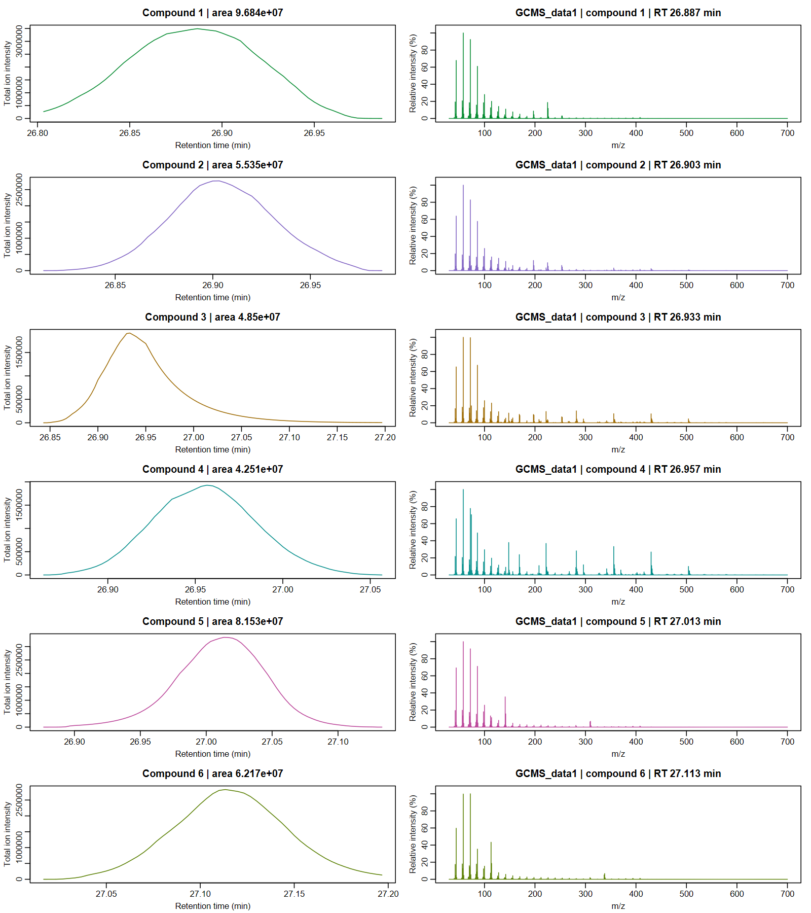

SPARSE NONNEGATIVE MATRIX FACTORIZATION · LOG-CONCAVE PROFILES
Sparse factors.
Interpretable signals.
Scalable sparse nonnegative matrix factorization with log-concave profile shape constraints, flexible noise models and automatic best rank tuning for single or multiple samples.
R · Local likelihood updates · Full spectra · Constant & varying PSFs
Sparse rankRecover a parsimonious set of nonnegative components Peak shape constraintsLog-concave profiles and constant or time-varying PSFs 7 noise familiesGaussian, Poisson, quasi-Poisson, NB2, NB1 and two Gamma models
Scalable sparse nonnegative matrix factorization with log-concave profile shape constraints, flexible noise models and automatic best rank tuning for single or multiple samples.
Start with a calibrated or estimated point spread function, then let each component acquire its own log-concave profile. Coupled models share spectra across samples while retaining sample-specific shapes, areas and observation grids.
Installation
install.packages("remotes")
remotes::install_github("tomwenseleers/L0nmf/L0nmf")Recover profiles and spectra
library(L0glm)
library(L0nmf)
data(GCMS_data1)
X <- convmatrix(convkernel("gaussian", 65L, list(sigma=8)), nrow(GCMS_data1))
fit <- splogconNMF(X, GCMS_data1, background=matrix(1,nrow(X),1),
family=quasipoisson("identity"), precluster=16L,
correlation="none")
fit
GIC(fit)
matplot(as.matrix(fit$H), type="l", lty=1, xlab="Scan", ylab="Elution profile")The factors retain every original outcome channel. Profiles have unit area, nonnegative spectra carry their intensities, and a smooth unpenalized background captures baseline variation. Selection and fusion use a parsimonious rank criterion with local likelihood updates.

The worked example shows fitting and diagnostics. The algorithm and theory give the likelihood, constraints and mathematical pseudocode.
The final original-channel pass checks component deletions, local fusions and missed residual peaks, accepting each change only when the complete likelihood-and-compound criterion improves.
Learn the methods
- Estimate PSFs: known convolution, calibration and blind kernel estimation.
- Sparse log-concave NMF with automatic best rank tuning.
- Coupled multisample log-concave NMF with automatic best rank tuning.
The mathematical article develops the objectives and algorithms. L0glm supplies sparse GLM selection; GCMSprime applies these models to chromatogram files, quantification and spectral identification.
Share spectra across samples
coupledNMF() aligns related samples and estimates common spectra with sample-specific log-concave profiles, integrated areas and smooth backgrounds. It supports all seven signal families, irregular scan grids and disk-backed observations. In a three-sample simulation with all 258 channels, it recovers all 78 compound occurrences in 29.69 seconds. With compounds absent from half the samples, all 37 present occurrences are recovered in 21.92 seconds.
fit <- coupledNMF(samples, family=quasipoisson("identity"), precluster=32L)
fit$areas
coef(fit, normalize="l1")See Coupled multisample log-concave NMF for simulations, plots and mathematical details, and GCMSprime for the directory-based chromatogram workflow.
Citation
An article describing the methods implemented in L0nmf is in preparation. If you use the package before the article is formally published, we would appreciate a citation to the package:
Wenseleers T, Vanderaa C (2026). L0nmf: Scalable Sparse Nonnegative Matrix Factorization with Automatic Rank Selection and Flexible Noise Models. R package version 0.1.0, https://tomwenseleers.github.io/L0nmf/.
The Authors and Citation page also provides the citation in BibTeX format. Please also cite the methodological sources linked in the help pages where relevant.